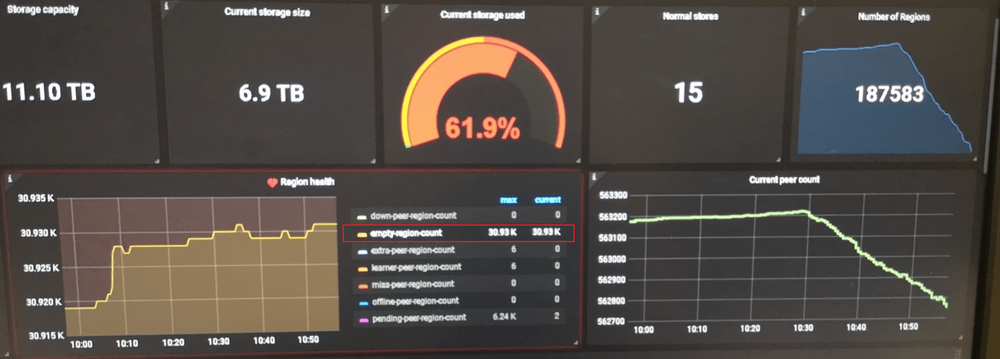
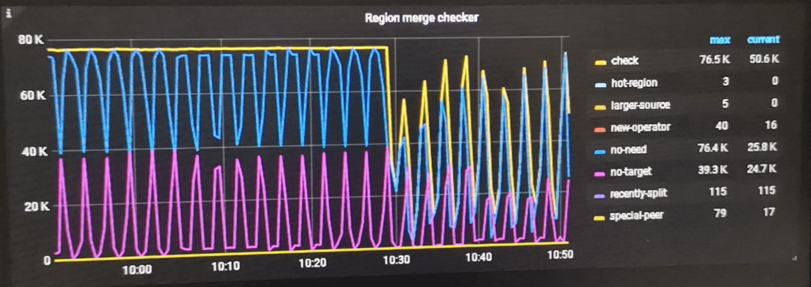

TiDB - PD Region Merge 食草兽

Contents
0x00 开始
- Region Merge 是否要开启
- 观察 pd dashboard 中 region health 中 empty-region-count 信息；
- 如该数值大于 store * 100 ，建议开启 Region Merge
- 如该数值大于 store * 1000 ，建议调整 Region Merge 阈值「或者检查是否开启了 Region Merge」
- 观察 pd dashboard 中 region health 中 empty-region-count 信息；

- Region Merge 功能由来
- 频繁 delete 历史数据会删除 region 内数据；循环一段时间之后 region 只留下了 region meta 信息
- region group 信息需要 raft 状态机维护「raft cpu」；当 empty-region 过多会产生不必要的 region 心跳消耗
- 开启 Region Merge 可以降低 raft cpu 消耗，同时减少 coprocessor cpu 扫描数据请求「delete 一批数据之后，还剩下 1000 数据，这些数据随机分布在 800 个 region 中，执行 sum/count 时就要向这 800 region 发起请求统计数据；合并之后只需要 1 个 region 请求」
Regions info
|
|
empty-region
|
|
0x01 开启
Region Merge 参数
- 开启 官网文档-Region Merge 功能
- 通过 pd-ctl 工具调整以下参数
- merge-schedule-limit 为 0 情况下为关闭状态
- region size 与 region keys 两条阈值互相满足的 region 会被列入 Region Merge 需求范围，只满足一项不会被 merge 操作。
- merge-schedule-limit 调度速度，围观官网文档 Region Merge 速度慢
|
|
校验集群需要 Region Merge 数据量
- pd-ctl 工具获取：size & keys 范围一下 region 数量
- 首先检测 linux 系统是否安装了 jq 工具
- 替换 approximate_size 与 approximate_keys 后的数值
- 校验后带入到 pd-ctl config set 中
|
|
0x02 运维
可在 server/schedule/checker/merge_checker.go 查看
- Region Merge 预检查
- 见 checker role 内容
- 确认 reigon 大小是否满足 merge 阈值参数
- 确认 region 相邻关系，相邻的两个 region 消消乐合并为一个
- 「潜规则」region leader 必须在相同一个台机器
- snapshot + add peer ；schedule region
- schedule ：transfer leader
- merge region；生成新的 region
- 新 region 升级为 region group
- +1 follower
- +1 follower
- checker role
监控图位于 pd dashboard – scheduler – 末尾右下角 
| num | checker | 描述 |
|---|---|---|
| 1 | recently-start | 判断启动时间是否超过 GetSplitMergeInterval 时间 // PD 初始化启动后 etcd meta 信息中 region size 为 0 ，此时默认跳过 region merge； region size > 0 & <= 1mb 同时满足 region keys & region size 时会进行 merge |
| 2 | recently-split | 不懂是个啥 |
| 3 | check | 默认属性：检查 region 各种状态、tikv 存储环境等 |
| 4 | skip | PD 初始化启动后 etcd meta 信息中 region size 为 0 ，此时默认跳过 region merge |
| 5 | no-need | // region is not small enough |
| 6 | special-peer | // skip region has down peers or pending peers or learner peers |
| 7 | abnormal-replica | // IsRegionReplicated checks if a region is fully replicated. When placement rules is enabled, its peers should fit corresponding rules. When placement rules is disabled, it should have enough replicas and no any learner peer. |
| 8 | hot-region | // skip hot reigon |
| 9 | no-target | 没有注释，理解是没有相邻的两个 region 可以用于 merge / 两个 region 的 start end key 不相邻 |
| 10 | new-operator | 默认属性：创建一个 operator merge 操作，合并相邻的两个 region |
| 11 | larger-source | region 大于 target ，谁是reigon ？ 谁是 target ？// 没追到谁是谁 |
emmm
- try tips
从底层往上观察 TiDB cluster 各组件监控，与 region merge 慢或者不工作场景排查时可能相关的内容「仅描述各组件涉及 region merge 相关内容」：
- 磁盘性能 IOPS：io util 不超过 70% & iops 读写能力大于 40000 iops
- TiKV thread cpu「监控」
- RAFT ：默认值为 2 * cpu vcore；region group 状态维护，数据写入与读取
- apply ：默认值为 2 * cpu vcore；region 合并写入更新至新 region group
- snapshot：默认值 1 * cpu vcore；在 region leader 上创建全量数据副本，协助 grpc 发送新机器
- GRPC：默认值 4 * cpu vcore；协助 snapshot 发送新机器
- 2PC Backoff「region 变动而出现的 tidb - tikv 之间交互增加」
- not leader；leader 位置有变动或者 leader 还未选举成功
- region miss；根据 region cache 未命中读取到数据
- 或许还有其他，详情见 tidb dashboard – kv error – resolve lock
- PD schedule「region 调度相关」
- Region merge check
- Region schedule / Leader Schedule
- PD ctl
- 检查 max-merge-region 相关的参数是否开启
- 检查 max-merge-region 中的 size & keys 是否可以命中到数据
0x03 其他
operator [check | show | add | remove] 是 2.0 时代加入功能，当时需要人工使用 pd-ctl operator add region merge ，后续逐渐优化到了根据阈值自动处理 region merge。未来可期
手工操作思路
查询 Region size 低于 xx MB 的数量以及 Region id；需要使用 pd-api「http://ip:2379/pdapi/v1/regions」 获取所有 Regions 信息，然后分析 approximate_size 低于 xx MB 的 Region ID
使用 region sibling <region_id> 查询 Region 相邻的 Region
>> region sibling 2
使用 merge-region <source_region_id> <target_region_id> 功能合并 “小 Region” 和“邻居 Region”
operator add merge-region 1 2 // 将 Region 1 与 Region 2 合并